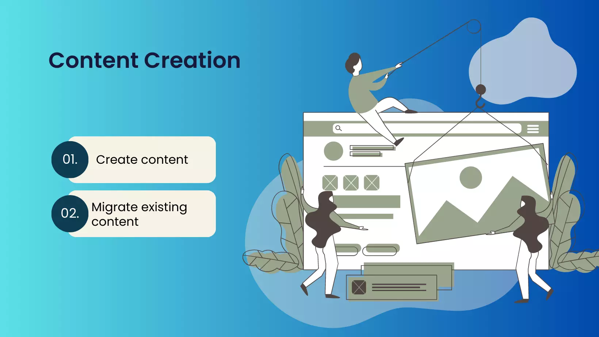

Content Writing

In the content focused step of the web development cycle, all the information is written. Each page in a website will have some kind of content and is important that that content is engaging and serves its purpose. The most important content should be the easiest to access.